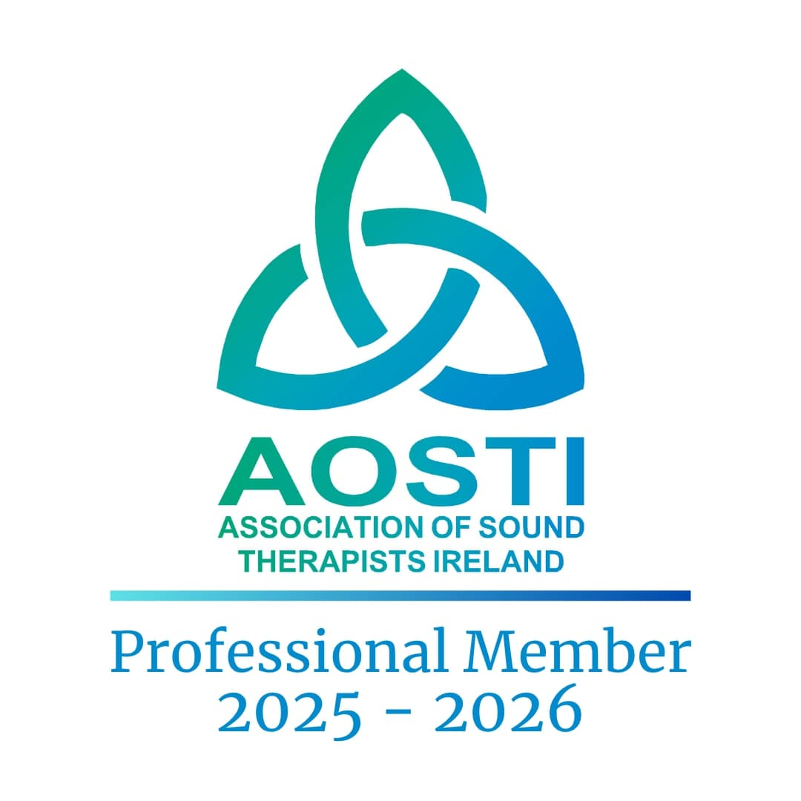
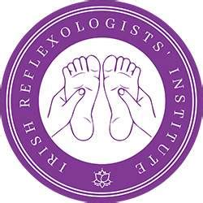
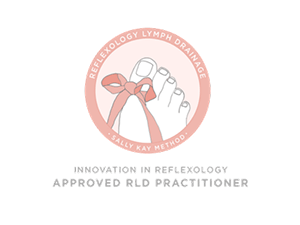
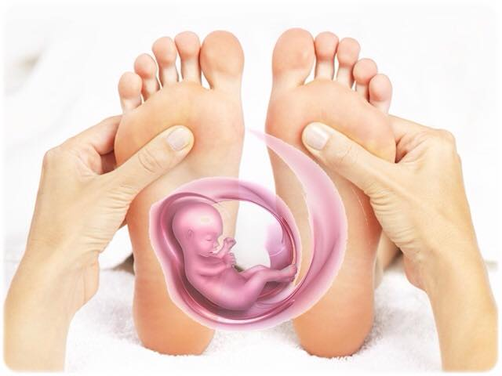
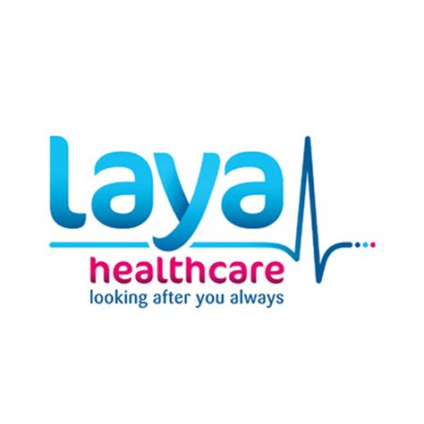
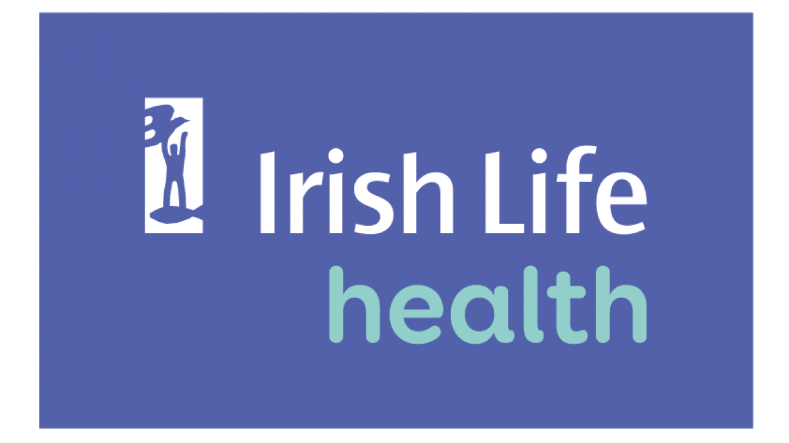
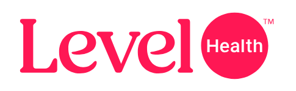

Complete Holistic Fertility Package
Healing Hands Health and Wellness Clinic, Newbridge, Kildare
About Your Practitioner
Bernadette Doyle is the founder of Healing Hands Health and Wellness, specialising in fertility reflexology, pregnancy care reflexology, bio energy healing, professional sound facilitation, and holistic wellness. Bernadette Doyle of ÉIST@Serenity Sounds at Healing Hands Health and Wellness Clinic, Newbridge, Kildare, designed this programme for subfertility health and wellness, assisting couples on their fertility journey.
Introduction
Subfertility affects millions of couples worldwide, bringing not only medical challenges but emotional, psychological, spiritual, and social difficulties in an ever-changing world. As society recognises the profound impact of subfertility, there is a growing need for a holistic approach that enhances the often lonely fertility journey.
This holistic health and wellness package offers a unique experience designed to suit the needs of each couple, integrating medical, emotional, and lifestyle choices. It combines the whole-istic with the medical approach, offering couples a complete internal reset where physical, mental/emotional, and spiritual togetherness begins - empowering hope, nurturing wellness, and supporting parenthood.
Vision & Mission
Vision: To offer an empathic, compassionate, integrative approach, enhancing fertility, strengthening relationships, and improving the overall health and wellness of individuals and couples.
Mission: Providing evidence-based holistic care to support and address every avenue of the subfertility journey, in a calm, nurturing, and inclusive environment.
Partner Participation
This fertility programme is designed for couples, and therefore both partners must participate fully. This includes all assessments, energy work, therapeutic sessions, sound therapy, ribbon and light ceremonies, and personalised reflexology plans. Each partner must complete a minimum of 8 reflexology sessions individually.
Sound Therapy
Working with a variety of instruments - singing bowls, crystal bowls, chimes, rain pole, sacred gongs, drums, and more - to create therapeutic soundscapes tailored to each couple's needs. The gentle vibrations and tones penetrate deep into the body, easing tension, reducing anxiety, and stimulating cellular regeneration. Sound therapy can be performed together and follows the bioenergy/tuning forks reset.
Fertility Reflexology (Individually)
Each person is recommended at least 8 treatments (one weekly), with reviews each week and protocols adjusted to suit everyone. Appointments are arranged at a day, evening, and time that suits best. Following reassessment, the couple and therapist can decide on follow-up appointments together or individually.
Fertility reflexology focuses on:
- Stimulating reflex points corresponding to the reproductive organs
- Balancing hormones through the endocrine system
- Improving circulation to the reproductive organs
- Reducing stress and supporting emotional well-being
Binding the Ties
A ceremony of ribbon and light, offering hope, courage and love. It honours shared history, tenderness, and resilience,symbolising the profound connection and unity between them. This sacred act weaves their energies, hearts, and souls together, creating an unbreakable bond that transcends the physical realm and with each breath, their love flows through the ribbons, intertwining their destines.
Bioenergy & Tuning Forks for Fertility
Bioenergy refers to the life force or vital energy that flows through and around the body. Imbalances or blockages in this energy can affect physical health and emotional well-being. For fertility, the Sacral Chakra (linked to reproductive organs and creativity) and the Heart Chakra (associated with love and emotional well-being) are particularly important.
Tuning fork therapy may support fertility by:
- Balancing the sacral and heart chakras
- Reducing stress and anxiety
- Enhancing blood flow and energy circulation to reproductive organs
- Supporting emotional and spiritual connection between partners
How You Feel After a Session
Clients often describe feeling more grounded, open, and aligned, creating a nurturing space for conception and emotional well-being. Many report a sense of profound peace and renewal, with positive changes in mood, sleep, and overall reproductive health. To get the most from your treatment, take it easy afterwards and drink plenty of water.
Duration and Frequency
Each reflexology session typically lasts 60 minutes. A minimum of 8 weekly treatments per partner is recommended, with protocols reviewed and adjusted each week. Appointments for all elements of the programme are arranged at times that suit each couple. Follow-up appointments are decided together with the therapist following reassessment.






